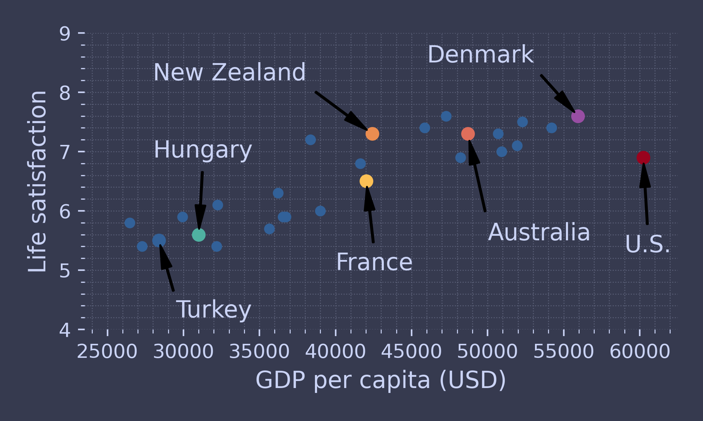
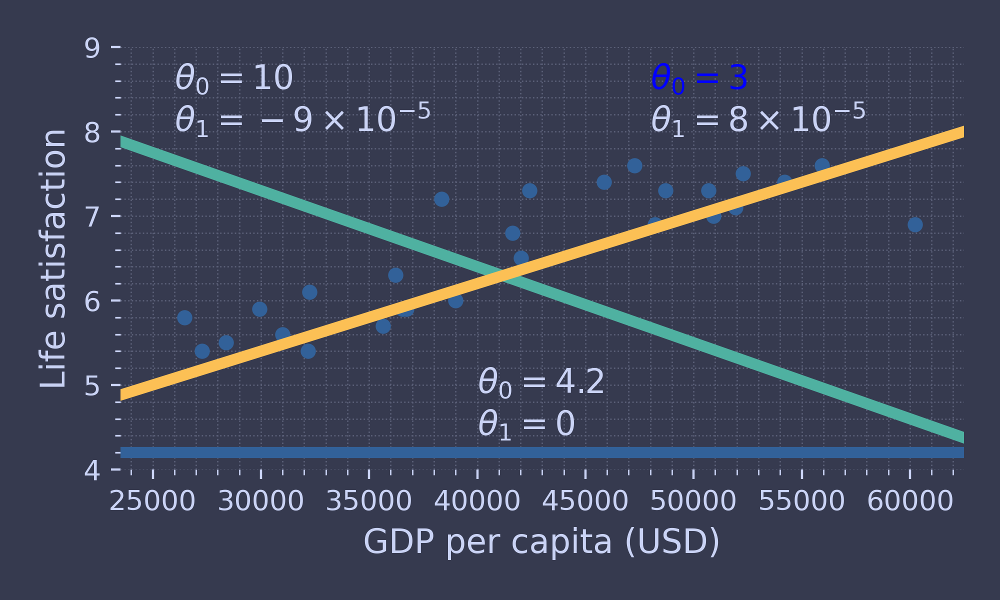
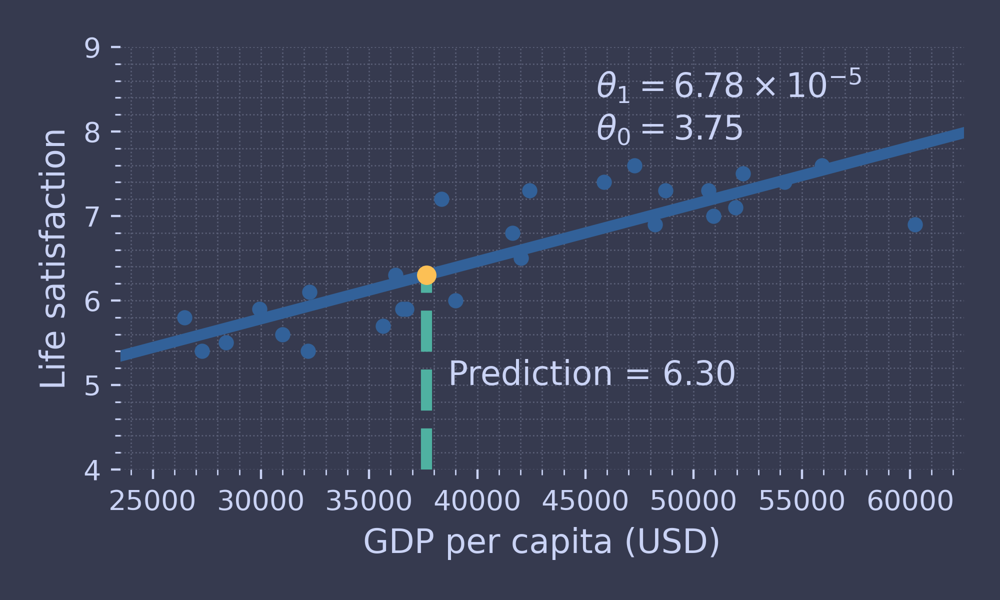
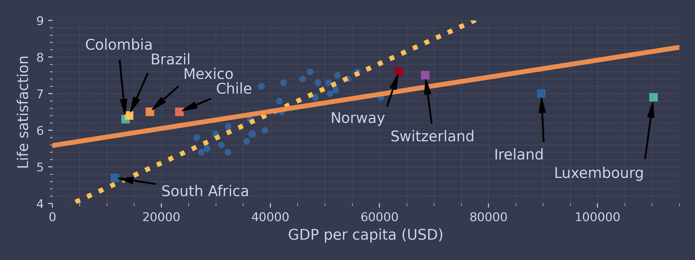
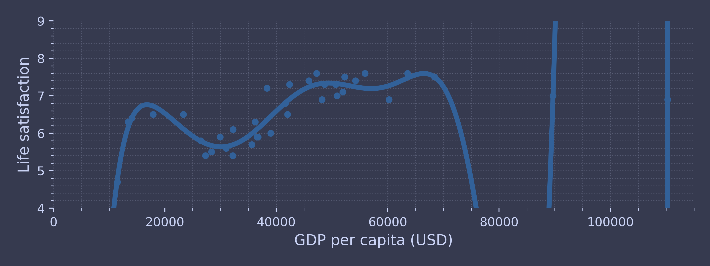
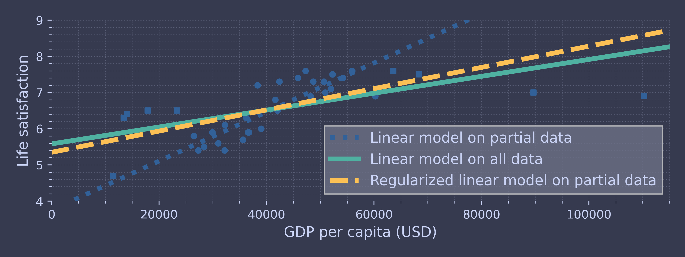

Code for Machine Learning and Data Science II Machine Learning Landscape
Table of Contents
These are the code snippets used in Machine Learning Landscape part of Machine Learning and Data Science II.
Introduction
The following code uses the standard matplotlib along with the custom ChalcedonPy which is detailed in its source code here.
The code is used primarily in the following code as a means to save figures for use in slides.
import matplotlib.pyplot as plt import ChalcedonPy as cp # Initialise ChalcedonPy cp.init(save_path="Machine-Learning-Landscape", display_mode="web")
Download the Data
To analyse the data of life satisfaction to GDP per capita, lets download the data.
from pathlib import Path import urllib.request # Set the datapath datapath = Path() / "datasets" / "lifesat" datapath.mkdir(parents=True, exist_ok=True) # Download the data and save it data_root = "https://github.com/ageron/data/raw/main/" for filename in ("oecd_bli.csv", "gdp_per_capita.csv"): if not (datapath / filename).is_file(): print("Downloading", filename) url = data_root + "lifesat/" + filename urllib.request.urlretrieve(url, datapath / filename)
Read the csv files using pd.read_csv() and save them to the variables.
oecd_bli = pd.read_csv(datapath / "oecd_bli.csv") gdp_per_capita = pd.read_csv(datapath / "gdp_per_capita.csv")
Work on the Data
Only keep the data with the matching year 2020.
gdp_year = 2020 gdppc_col = "GDP per capita (USD)" lifesat_col = "Life satisfaction" gdp_per_capita = gdp_per_capita[gdp_per_capita["Year"] == gdp_year] gdp_per_capita = gdp_per_capita.drop(["Code", "Year"], axis=1) gdp_per_capita.columns = ["Country", gdppc_col] gdp_per_capita.set_index("Country", inplace=True) gdp_per_capita.head()
Process the second csv file and only keep the Life satisfaction column.
oecd_bli = oecd_bli[oecd_bli["INEQUALITY"]=="TOT"] oecd_bli = oecd_bli.pivot(index="Country", columns="Indicator", values="Value") oecd_bli.head()
Merge the life satisfaction data and the GDP per capita data, keeping only the GDP per capita and Life satisfaction columns:
full_country_stats = pd.merge(left=oecd_bli, right=gdp_per_capita, left_index=True, right_index=True) full_country_stats.sort_values(by=gdppc_col, inplace=True) full_country_stats = full_country_stats[[gdppc_col, lifesat_col]] full_country_stats.head()
To showcase overfitting lets remove some data and only keep a certain range
min_gdp = 23_500 max_gdp = 62_500 country_stats = full_country_stats[(full_country_stats[gdppc_col] >= min_gdp) & (full_country_stats[gdppc_col] <= max_gdp)] country_stats.head()
Save these files to csv for working later.
country_stats.to_csv(datapath / "lifesat.csv") full_country_stats.to_csv(datapath / "lifesat_full.csv")
Plot these values as scatter plot.
country_stats.plot(kind='scatter', figsize=(5, 3), grid=True, x=gdppc_col, y=lifesat_col) min_life_sat = 4 max_life_sat = 9 position_text = { "Turkey": (29_500, 4.2), "Hungary": (28_000, 6.9), "France": (40_000, 5), "New Zealand": (28_000, 8.2), "Australia": (50_000, 5.5), "United States": (59_000, 5.3), "Denmark": (46_000, 8.5) } for country, pos_text in position_text.items(): pos_data_x = country_stats[gdppc_col].loc[country] pos_data_y = country_stats[lifesat_col].loc[country] country = "U.S." if country == "United States" else country plt.annotate(country, xy=(pos_data_x, pos_data_y), xytext=pos_text, fontsize=12, arrowprops=dict(facecolor='black', width=0.5, shrink=0.08, headwidth=5)) plt.plot(pos_data_x, pos_data_y, "o") plt.axis([min_gdp, max_gdp, min_life_sat, max_life_sat]) cp.store_fig('happy-money', close=True)

Lets looks at the points we highlighted and see their GDP and life satisfaction.
highlighted_countries = country_stats.loc[list(position_text.keys())] highlighted_countries[[gdppc_col, lifesat_col]].sort_values(by=gdppc_col)
GDP per capita (USD) Life satisfaction
Country
Turkey 28384.987785 5.5
Hungary 31007.768407 5.6
France 42025.617373 6.5
New Zealand 42404.393738 7.3
Australia 48697.837028 7.3
Denmark 55938.212809 7.6
United States 60235.728492 6.9
Fit the Model
Time to try to fit linear models to our limited data.
country_stats.plot(kind='scatter', figsize=(5, 3), grid=True, x=gdppc_col, y=lifesat_col) X = np.linspace(min_gdp, max_gdp, 1000) w1, w2 = 4.2, 0 plt.plot(X, w1 + w2 * 1e-5 * X) plt.text(40_000, 4.9, fr"$\theta_0 = {w1}$") plt.text(40_000, 4.4, fr"$\theta_1 = {w2}$") w1, w2 = 10, -9 plt.plot(X, w1 + w2 * 1e-5 * X) plt.text(26_000, 8.5, fr"$\theta_0 = {w1}$") plt.text(26_000, 8.0, fr"$\theta_1 = {w2} \times 10^{{-5}}$") w1, w2 = 3, 8 plt.plot(X, w1 + w2 * 1e-5 * X) plt.text(48_000, 8.5, fr"$\theta_0 = {w1}$") plt.text(48_000, 8.0, fr"$\theta_1 = {w2} \times 10^{{-5}}$") plt.axis([min_gdp, max_gdp, min_life_sat, max_life_sat]) cp.store_fig('model-tweak', close=True)

Now, generate our model, get the best \(\theta_0\) and \(\theta_0\) and plot the best fit.
from sklearn import linear_model X_sample = country_stats[[gdppc_col]].values y_sample = country_stats[[lifesat_col]].values lin1 = linear_model.LinearRegression() lin1.fit(X_sample, y_sample) t0, t1 = lin1.intercept_[0], lin1.coef_[0][0] country_stats.plot(kind='scatter', figsize=(5, 3), grid=True, x=gdppc_col, y=lifesat_col) X = np.linspace(min_gdp, max_gdp, 1000) plt.plot(X, t0 + t1 * X) plt.text(max_gdp - 20_000, min_life_sat + 1.9, fr"$\theta_0 = {t0:.2f}$") plt.text(max_gdp - 20_000, min_life_sat + 1.3, fr"$\theta_1 = {t1 * 1e5:.2f} \times 10^{{-5}}$") plt.axis([min_gdp, max_gdp, min_life_sat, max_life_sat]) cp.store_fig('best-plot', close=True)

Let's do a prediction with the Cyprus data.
cyprus_gdp_per_capita = gdp_per_capita[gdppc_col].loc["Cyprus"] cyprus_predicted_life_satisfaction = lin1.predict([[cyprus_gdp_per_capita]])[0, 0] country_stats.plot(kind='scatter', figsize=(5, 3), grid=True, x=gdppc_col, y=lifesat_col) X = np.linspace(min_gdp, max_gdp, 1000) plt.plot(X, t0 + t1 * X) plt.text(min_gdp + 22_000, max_life_sat - 1.1, fr"$\theta_0 = {t0:.2f}$") plt.text(min_gdp + 22_000, max_life_sat - 0.6, fr"$\theta_1 = {t1 * 1e5:.2f} \times 10^{{-5}}$") plt.plot([cyprus_gdp_per_capita, cyprus_gdp_per_capita], [min_life_sat, cyprus_predicted_life_satisfaction], "--") plt.text(cyprus_gdp_per_capita + 1000, 5.0, fr"Prediction = {cyprus_predicted_life_satisfaction:.2f}") plt.plot(cyprus_gdp_per_capita, cyprus_predicted_life_satisfaction, "o") plt.axis([min_gdp, max_gdp, min_life_sat, max_life_sat]) cp.store_fig('prediction', close=True)

Testing the Model
Time to add the missing data and see if our model still works.
missing_data = full_country_stats[(full_country_stats[gdppc_col] < min_gdp) | (full_country_stats[gdppc_col] > max_gdp)] position_text_missing_countries = { "South Africa": (20_000, 4.2), "Colombia": (6_000, 8.2), "Brazil": (18_000, 7.8), "Mexico": (24_000, 7.4), "Chile": (30_000, 7.0), "Norway": (51_000, 6.2), "Switzerland": (62_000, 5.7), "Ireland": (81_000, 5.2), "Luxembourg": (92_000, 4.7), } full_country_stats.plot(kind='scatter', figsize=(8, 3), x=gdppc_col, y=lifesat_col, grid=True) for country, pos_text in position_text_missing_countries.items(): pos_data_x, pos_data_y = missing_data.loc[country] plt.annotate(country, xy=(pos_data_x, pos_data_y), xytext=pos_text, fontsize=12, arrowprops=dict(facecolor='black', width=0.5, shrink=0.08, headwidth=5)) plt.plot(pos_data_x, pos_data_y, "s") X = np.linspace(0, 115_000, 1000) plt.plot(X, t0 + t1 * X, ":") lin_reg_full = linear_model.LinearRegression() Xfull = np.c_[full_country_stats[gdppc_col]] yfull = np.c_[full_country_stats[lifesat_col]] lin_reg_full.fit(Xfull, yfull) t0full, t1full = lin_reg_full.intercept_[0], lin_reg_full.coef_[0][0] X = np.linspace(0, 115_000, 1000) plt.plot(X, t0full + t1full * X) plt.axis([0, 115_000, min_life_sat, max_life_sat]) cp.store_fig('missing-data', close=True)

It seems our model was a bit narrow and is not able to understand the new data.
Over-Fitting Data
Below is an over-fitted data which cannot be used to a product.
from sklearn import preprocessing from sklearn import pipeline full_country_stats.plot(kind='scatter', figsize=(8, 3), x=gdppc_col, y=lifesat_col, grid=True) poly = preprocessing.PolynomialFeatures(degree=10, include_bias=False) scaler = preprocessing.StandardScaler() lin_reg2 = linear_model.LinearRegression() pipeline_reg = pipeline.Pipeline([ ('poly', poly), ('scal', scaler), ('lin', lin_reg2)]) pipeline_reg.fit(Xfull, yfull) curve = pipeline_reg.predict(X[:, np.newaxis]) plt.plot(X, curve) plt.axis([0, 115_000, min_life_sat, max_life_sat]) cp.store_fig('overfitting-data', close=True)

Controlling the Parameters
Final example is to showcase how regularised data works on predicting model.
w_countries = [c for c in full_country_stats.index if "W" in c.upper()] all_w_countries = [c for c in gdp_per_capita.index if "W" in c.upper()] country_stats.plot(kind='scatter', x=gdppc_col, y=lifesat_col, figsize=(8, 3)) missing_data.plot(kind='scatter', x=gdppc_col, y=lifesat_col, marker="s", grid=True, ax=plt.gca()) X = np.linspace(0, 115_000, 1000) plt.plot(X, t0 + t1*X, ":", label="Linear model on partial data") plt.plot(X, t0full + t1full * X, "-", label="Linear model on all data") ridge = linear_model.Ridge(alpha=10**9.5) X_sample = country_stats[[gdppc_col]] y_sample = country_stats[[lifesat_col]] ridge.fit(X_sample, y_sample) t0ridge, t1ridge = ridge.intercept_[0], ridge.coef_[0][0] plt.plot(X, t0ridge + t1ridge * X, "--", label="Regularized linear model on partial data") plt.legend(loc="lower right") plt.axis([0, 115_000, min_life_sat, max_life_sat]) cp.store_fig('ridge-data', close=True)
